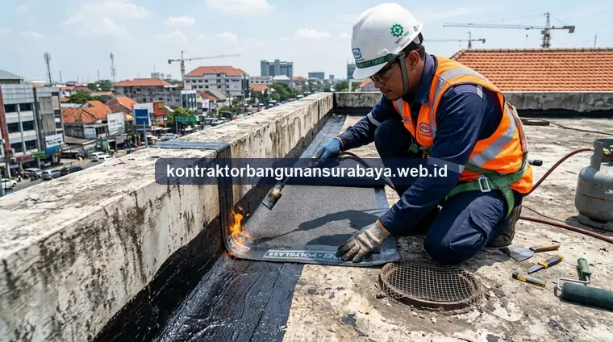

1. Mengapa Waterproofing Atap Penting Sebelum Musim Hujan?
Waterproofing atap penting dilakukan sebelum musim hujan karena lapisan pelindung ini mencegah air merembes ke dalam struktur beton yang dapat menyebabkan korosi pada tulangan besi dan kerusakan pada plafon di bawahnya. kontraktorbangunansurabaya.web.id membantu pemilik bangunan menerapkan sistem waterproofing yang tepat agar atap dan dak beton tetap terlindungi sepanjang musim hujan.
Di kawasan tropis dengan curah hujan tinggi seperti Surabaya, dak atap beton yang terpapar panas terik matahari di siang hari mengalami pemuaian, lalu menyusut secara drastis saat hujan turun mendadak. Siklus termal ekstrem ini menciptakan retakan mikro yang menjadi jalur utama rembesan air ke dalam interior bangunan jika tidak dilindungi dengan jasa maintenance bangunan yang terencana.
Dampak Buruk Rembesan Air pada Dak Beton
Air hujan yang masuk ke pori-pori beton membawa zat asam yang mempercepat karat pada besi tulangan. Korosi ini menyebabkan volume besi membesar, memecahkan selimut beton dari dalam (spalling), dan mengancam integritas struktur bangunan secara permanen.
2. Tanda-Tanda Kerusakan Waterproofing yang Perlu Diwaspadai
Munculnya bercak kuning kecokelatan pada plafon, cat dinding yang mengelupas dekat area dak, atau bau lembap yang tidak biasa merupakan tanda-tanda awal bahwa lapisan waterproofing pada atap sudah mulai rusak dan perlu segera diperiksa lebih lanjut pada properti hunian maupun gedung kantor dan ruko aktif.
Retak rambut pada permukaan dak beton yang terlihat kasat mata juga menjadi jalur masuk air hujan ke dalam struktur, meski retaknya sendiri terlihat kecil dan tidak signifikan secara visual, sehingga pemeriksaan berkala tetap diperlukan meski belum ada tanda kebocoran yang jelas dari dalam ruangan.
| Indikasi Kerusakan | Tanda Visual Lapangan | Tingkat Risiko | Rekomendasi Penanganan |
|---|---|---|---|
| Bercak Plafon & Bau Apek | Plafon gypsum bernoda kuning, berjamur, atau melorot | Tinggi | Injeksi retak dak & penggantian plafon terdampak |
| Cat Dinding Menggelembung | Cat mengelupas di perbatasan dinding atas dekat dak | Sedang | Pelapisan ulang waterproofing sudut flashing/talang |
| Retak Rambut Dak Beton | Garis retak halus di lantai dak terbuka | Sedang | Grouting semen elastis & coating aspal elastomeric |
| Lapisan Waterproofing Mengelupas | Lapisan lama rapuh, pecah-pecah akibat sinar UV | Tinggi | Pengelupasan total & aplikasi membran baru |
Perubahan warna pada lapisan waterproofing yang mulai pudar atau mengelupas di beberapa titik juga menjadi sinyal bahwa lapisan pelindung tersebut sudah melewati usia pakainya, sehingga pengecekan ulang sebaiknya dilakukan sebelum musim hujan berikutnya tiba, bukan menunggu kebocoran benar-benar terjadi sebagaimana diuraikan dalam panduan renovasi rumah dan ruko di Surabaya.
3. Tips Memilih Pelapis Waterproofing Aspal Cair Elastis & Membran
Pelapis waterproofing berbahan dasar aspal cair elastis (elastomeric) umumnya dipilih karena kemampuannya mengikuti pergerakan atau muai-susut permukaan beton akibat perubahan suhu, sehingga risiko retak pada lapisan pelindung itu sendiri menjadi lebih kecil dibanding pelapis yang kaku.

Aspal Cair Elastis
Sangat fleksibel, mudah diaplikasikan pada permukaan tidak rata, dan menutup celah retak rambut secara menyeluruh tanpa sambungan (seamless).
Membran Bakar (Torch-on)
Ketahanan mekanis tinggi, sangat kuat menahan genangan air permanen dan lalu lintas pijakan di atas rooftop ruko atau gedung.
Polyurethane (PU) Coating
Tahan paparan sinar UV matahari ekstrem, memberikan lapisan akhir mulus dengan daya rekat sangat kuat pada atap dak minimalis modern.
Pemilihan ketebalan lapisan waterproofing juga perlu disesuaikan dengan kondisi paparan sinar matahari dan genangan air pada area tersebut, di mana area yang lebih sering tergenang air umumnya membutuhkan lapisan yang lebih tebal dan durabel dibanding area yang hanya terkena hujan sesaat.
Selain aspal cair, terdapat pula pilihan waterproofing membran bakar atau coating berbasis polyurethane yang masing-masing memiliki karakteristik daya tahan dan cara aplikasi berbeda, sehingga pemilihannya sebaiknya disesuaikan dengan anggaran dan tingkat risiko kebocoran pada bangunan tersebut.
4. Penerapan Sistem Waterproofing Menyeluruh di Surabaya
Penerapan waterproofing yang efektif tidak hanya soal melapisi permukaan, tetapi juga mencakup persiapan permukaan yang bersih dari debu dan kotoran, perbaikan retak terlebih dahulu, serta pemasangan sistem talang yang memadai agar air tidak menggenang lama di atas permukaan dak.
Standar Kerja Waterproofing Profesional:
- Pembersihan & Grinding: Menghilangkan lumut, kotoran, dan cat lama yang rapuh hingga substrat beton terbuka.
- Perbaikan Sudut & Retak (Chamfer/Fillet): Membentuk sudut lengkung pada pertemuan dinding dan lantai dak.
- Aplikasi Primer Khusus: Memaksimalkan daya rekat lapisan elastomeric ke dalam pori-pori beton.
- Pengujian Rendam (Flood Test): Memastikan 100% bebas rembes sebelum serah terima pekerjaan.
Tim kontraktorbangunansurabaya.web.id melakukan survei kondisi atap sebelum menentukan jenis dan ketebalan lapisan waterproofing yang sesuai, sehingga penanganan yang diberikan benar-benar menjawab akar masalah kebocoran, bukan sekadar menutupi gejala kebocoran sementara waktu.
Garansi pengerjaan waterproofing, misalnya dalam bentuk jaminan bebas bocor selama periode tertentu, juga menjadi nilai tambah yang perlu dipertimbangkan pemilik bangunan saat memilih penyedia jasa, sebagai bentuk pertanggungjawaban atas hasil pekerjaan yang telah dilakukan.
Pemeriksaan kondisi talang dan saluran pembuangan air hujan secara rutin juga tidak kalah penting, karena talang yang tersumbat daun atau kotoran dapat menyebabkan air meluap dan merembes ke area yang seharusnya sudah terlindungi lapisan waterproofing.
Pemeliharaan Bangunan Menyeluruh
Waterproofing adalah salah satu bagian dari perawatan bangunan yang lebih luas. Pelajari cakupan lengkapnya pada panduan mengenai jasa waterproofing atap surabaya yang membahas seluruh ruang lingkup maintenance bangunan secara menyeluruh.
5. FAQ Seputar Waterproofing Atap Bangunan di Surabaya
6. Konsultasi Gratis Sekarang
Ingin berdiskusi lebih lanjut mengenai kebutuhan inspeksi atap, aplikasi waterproofing dak beton, dan konstruksi bangunan Anda di Surabaya? Hubungi tim kami melalui WhatsApp untuk konsultasi awal tanpa biaya bersama kontraktorbangunansurabaya.web.id.
Konsultasi WhatsApp di 0889-8964-3555Tim Pemeliharaan & Spesialis Waterproofing Kontraktor Bangunan Surabaya
Divisi Spesialis Waterproofing & Proteksi Struktur Beton. Berpengalaman menangani aplikasi aspal cair elastis, membran bakar, dan coating polyurethane untuk gedung komersial, ruko, dan rumah tinggal di Surabaya.